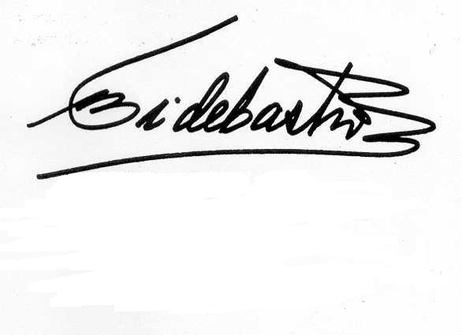

Carta del compañero Fidel a sus compatriotas
Queridos compatriotas:
Ayer 20 de octubre, al finalizar mi discurso en el acto de Santa Clara, fui afectado por una caída accidental. Algunas agencias cablegráficas y otros medios que transmiten noticias divulgaron varias versiones sobre las causas del accidente. Como protagonista y testigo afectado les puedo explicar con toda precisión las causas de lo ocurrido.
Yo había concluido mi discurso a los graduados como instructores de arte alrededor de las 10 de la noche. Varios compañeros del Partido y del Gobierno subieron a la tribuna para saludarnos. Entre ellos estaba Elián, como es habitual en determinados actos. Estuvimos allí varios minutos y de inmediato bajamos a reunirnos de nuevo, por la misma pequeña escalerita de madera que usamos para acceder a la tribuna, rápido por el pavimento de granito coloreado, y a sentarme en la misma silla que me asignaron antes de que llegara mi turno en la tribuna, y caminaba sobre el pavimento de granito a la vez que de vez en cuando saludaba a los entusiastas instructores y a más de 25 mil vecinos de la provincia de Villa Clara invitados al acto.
Cuando llegué al área de concreto, a unos 15 o 20 metros de la primera hilera de sillas, no me percaté de que había una acera relativamente alta entre el pavimento y la multitud. Mi pie izquierdo pisó en el vacío, por la diferencia de altura con relación al área donde estaban situados los participantes en sus respectivas sillas. El impulso y la ley de gravedad, descubierta hace tiempo por Newton, hicieron que al dar el paso en falso me precipitara hacia adelante hasta caer, en fracción de segundos, sobre el pavimento. Por puro instinto, mis brazos se adelantaron para amortiguar el golpe; de lo contrario, mi rostro y mi cabeza habrían chocado fuertemente contra el piso.
No se podía culpar a nadie. Era absolutamente mía la responsabilidad. Al parecer, la emoción de ese día lleno de creaciones y simbolismos explica mi descuido.
Lo demás que ocurrió en los siguientes minutos es de sobra conocido. Mi mayor dolor en ese instante era la idea del sufrimiento de aquella masa de jóvenes graduados y de los villaclareños invitados a tan bella y emocionante actividad.
Apenas podía moverme. Y después de muchos obstáculos, en medio de aquella consternación, pude ser introducido en la parte trasera del automóvil en que viajaba y no en el jeep que solicité. No apareció allí ni uno solo. Nos dirigimos hacia la casa que me había sido asignada, para realizar una primera observación de los daños ocasionados por la caída; al fin y al cabo, era poco lo que podía hacerse allí.
Apareció una ambulancia, decidimos utilizarla para trasladarme a la capital. Evidentemente, los dolores y los síntomas indicaban la necesidad de análisis profundos y posibles intervenciones quirúrgicas de modo inmediato. Tendido sobre una camilla me trasladaron en la ambulancia hacia la capital.
No voy a omitir que junto a varios médicos muy competentes y varios compañeros, como Carlitos y otros, apretujados en aquella ambulancia, a pesar de algunos baches, fue cómodo y agradable. Algunos analgésicos habían sido suministrados, y en cierto modo aliviaron al paciente de agudos dolores.
Nos pusimos a trabajar en el camino. Llamamos a nuestra oficina y a diversos compañeros para que suministraran información sobre las reacciones internacionales, y comunicarles con precisión lo ocurrido. Se dieron instrucciones, se movilizaron medios técnicos y personal médico especializado, para disponer de las condiciones requeridas para las distintas variantes de afectación que se consideraban posibles.
Hasta el Presidente Hugo Chávez llamó apenas recibir la noticia. Conversó con Felipe y pidió comunicarse conmigo, lo que fue posible gracias a las comunicaciones inalámbricas, y a pesar de las dificultades de este tipo: son difíciles y se interrumpen con frecuencia por razones técnicas.
Pude conversar por la misma vía con los compañeros instructores reunidos en Santa Clara. Les pedí encarecidamente que no suspendieran la fiesta organizada después del acto. Utilizando un celular puesto ante el micrófono donde estaban reunidos, les hablé directamente y transmití el mensaje.
Salimos de Santa Clara alrededor de las once de la noche. Llegamos hasta el Palacio de la Revolución. Cargado en camilla y al hombro de varios compañeros, fui conducido de inmediato a la pequeña instalación hospitalaria, con un mínimo de equipos necesarios para atender casos de emergencia. De inmediato, exámenes clínicos, radiografías, pruebas de sangre y otras investigaciones. Se pudo precisar que las complicaciones más importantes estaban en la rodilla izquierda y en la parte superior del brazo derecho, donde el húmero presentaba una fisura. La rótula estaba fragmentada en ocho pedazos. Yo podía observar cada una de las imágenes y los exámenes. De común acuerdo, los especialistas y el paciente, decidimos proceder a la inmediata operación de la rodilla, e inmovilizar el brazo derecho con un sencillo cabestrillo.
El proceso alrededor de la operación duró tres horas quince minutos. Los ortopédicos se dedicaron a reunir y ubicar cada uno de los fragmentos en los sitios que les correspondían a cada uno de ellos y, como tejedores, proceder a unirlos sólidamente, cosiéndolos con fino hilo de acero inoxidable unos y otros. Un trabajo de orfebrería.
El paciente les solicitó a los médicos no le aplicaran ningún sedante, y utilizaron anestesia por vía raquídea. El anestésico por vía raquídea adormece totalmente la parte inferior del cuerpo y mantiene intacto el resto del organismo. Les explicó que dadas las circunstancias actuales era necesario evitar la anestesia general para estar en condiciones de atender numerosos asuntos importantes. Por ello, durante las horas mencionadas que duró el proceso, mantuvo el contacto con su jefe de despacho, también en las proximidades del salón de operaciones y vestido con la ropa estéril de los cirujanos. Así, todo el tiempo, continuó recibiendo informaciones y dando instrucciones sobre el manejo de la situación creada con el imprevisto accidente.
Finalizada la parte quirúrgica se procedió a enyesar la pierna izquierda, a la vez que en ese mismo momento se procedía a inmovilizar el brazo derecho.
Realmente, compatriotas, ha sido una experiencia inolvidable. Los especialistas y el paciente analizaron y coordinaron perfectamente bien lo que debía hacerse en las circunstancias concretas que está viviendo el país y sin perder un solo minuto.
Desde el mismo instante de la caída no he dejado de atender las tareas más importantes que me corresponden, en coordinación con todos los demás compañeros.
Deseaba transmitirles en la noche de hoy estas noticias. Evoluciono bien y no dejaré de comunicarme con ustedes. Les expreso mis más profundos agradecimientos por las pruebas de cariño y solidaridad que he recibido de ustedes en estos instantes.
Cada uno de los revolucionarios cubanos sabe lo que debe hacer en cada instante. ¡Hagámoslo!
Les ruego me excusen por tan largo mensaje.

Fidel Castro
Octubre 21 del 2004
7:35 pm